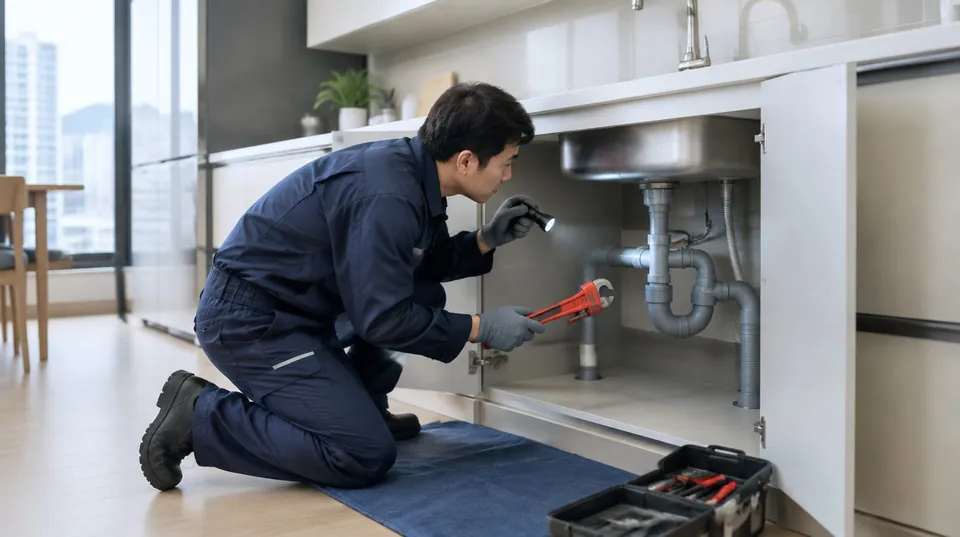
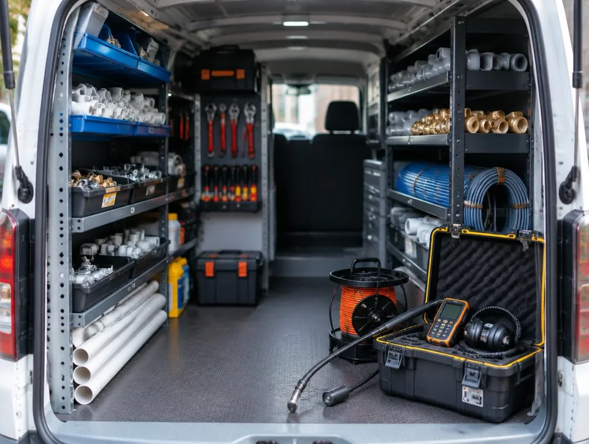
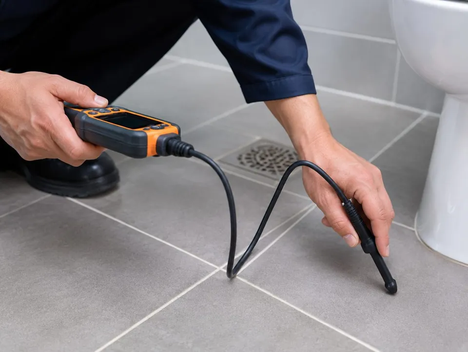
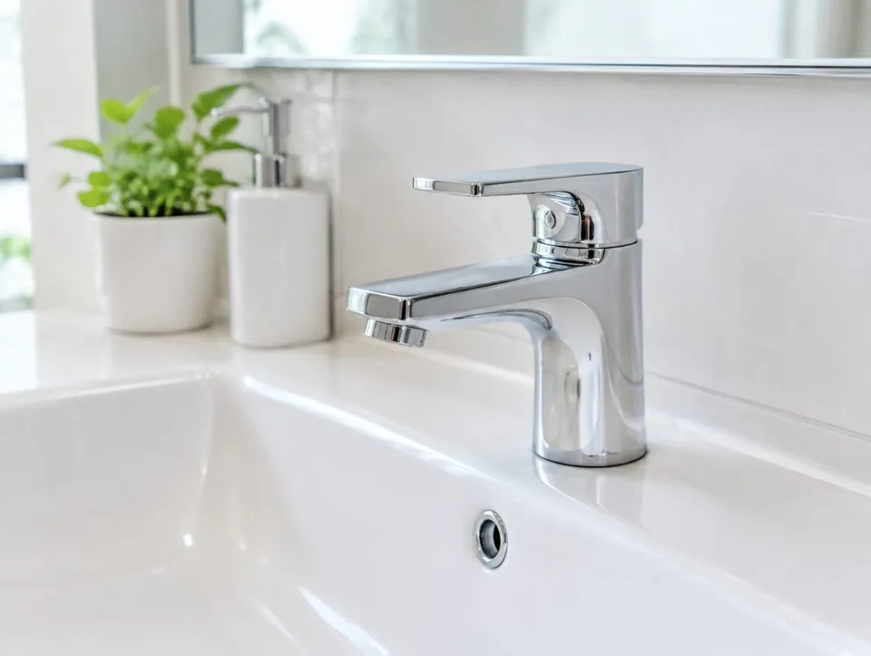
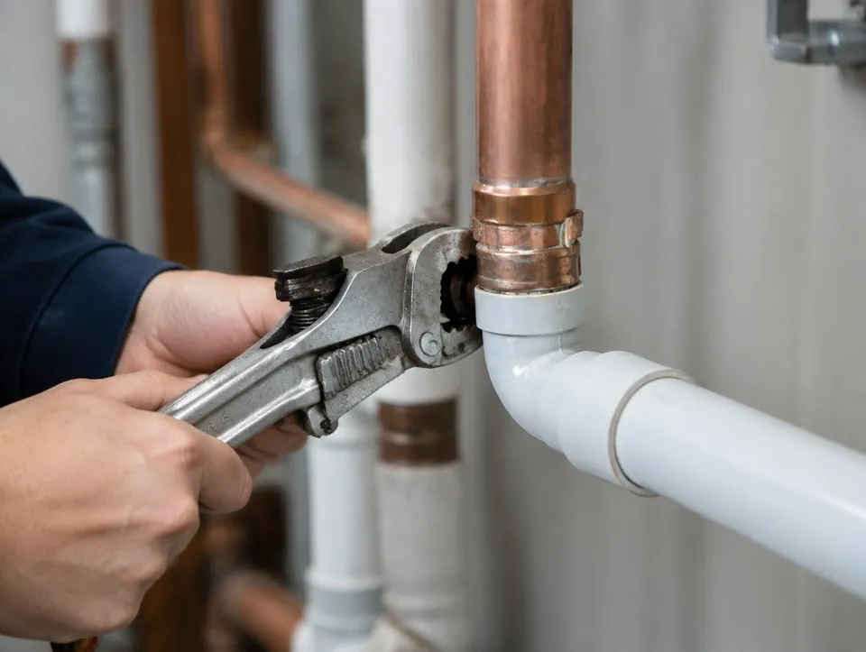
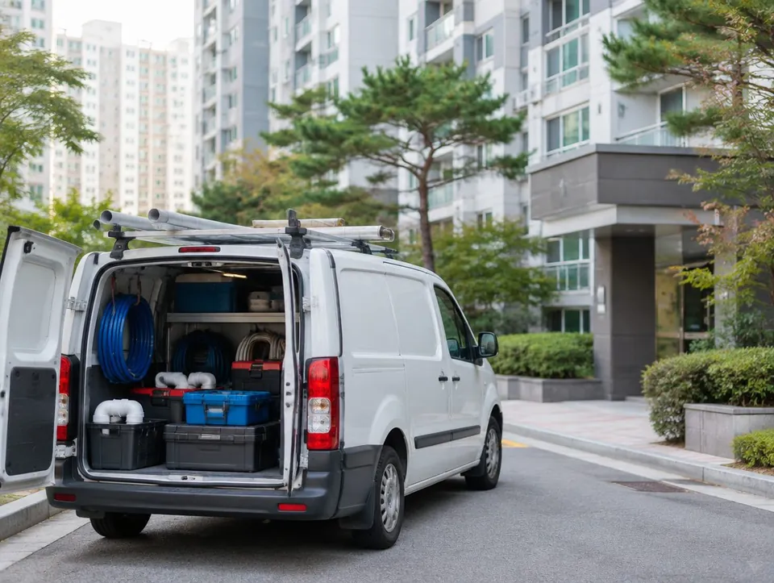

○○누수탐지 A는 어떤 곳인가요?
안산시 설비 · 누수 ○○누수탐지 A입니다. 누수탐지 · 하수구 · 변기 막힘 · 배관 교체 · 수전 · 보일러 배관.
- 상호
- ○○누수탐지 A
- 업종
- 설비 · 누수
- 서비스 지역
- 안산 · 시흥 · 군포
- 영업시간
- 평일 09:00 ~ 18:00 (가상)
- 주소
- 안산시 00로 00

- 새는 자리를 표시한 뒤 그 부분만 엽니다
- 견적을 먼저 드리고 동의하셔야 시공합니다
- 작업 사진과 소견서를 보험 접수용으로 드립니다

작업 순서
- 전화 상담 · 증상 확인
- 현장 방문 · 계량기 확인
- 장비 탐지 · 위치 표시
- 견적 설명 · 동의 후 시공
- 사진 · 소견서 전달



자주 묻는 질문
바닥을 다 깨야 하나요?
아닙니다. 청음 · 가스 · 열화상 장비로 새는 위치를 먼저 표시하고, 그 부분만 엽니다. 위치를 못 짚으면 공사를 시작하지 않습니다.
비용은 언제 알 수 있나요?
탐지가 끝나면 시공 범위와 견적을 먼저 설명드립니다. 동의하시기 전에는 공사를 하지 않습니다. 출장비와 탐지비 기준은 상담 전화에서 미리 안내드립니다.
아랫집 피해는 보험 처리가 되나요?
가입하신 일상생활배상책임보험에 따라 달라 보험사 판단이 먼저입니다. 저희는 접수에 쓰실 작업 전후 사진과 누수 위치 소견서를 드립니다.
아랫집에서 물이 샌다고 연락이 왔어요. 먼저 뭘 하나요?
집 안 수도를 모두 잠근 뒤 계량기 바늘이 도는지 보세요. 잠갔는데도 돌면 배관 누수 가능성이 큽니다. 그 상태로 전화 주시면 증상부터 여쭙겠습니다.
지금 전화 상담
○○누수탐지 A · 031-000-0000 · 평일 09:00 ~ 18:00 (가상)